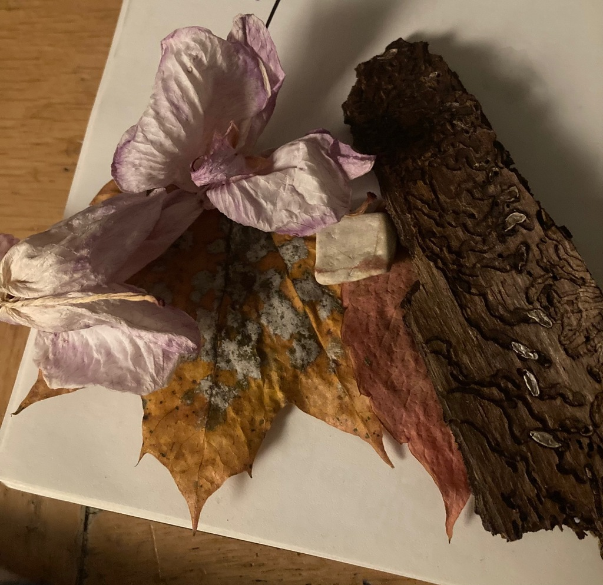
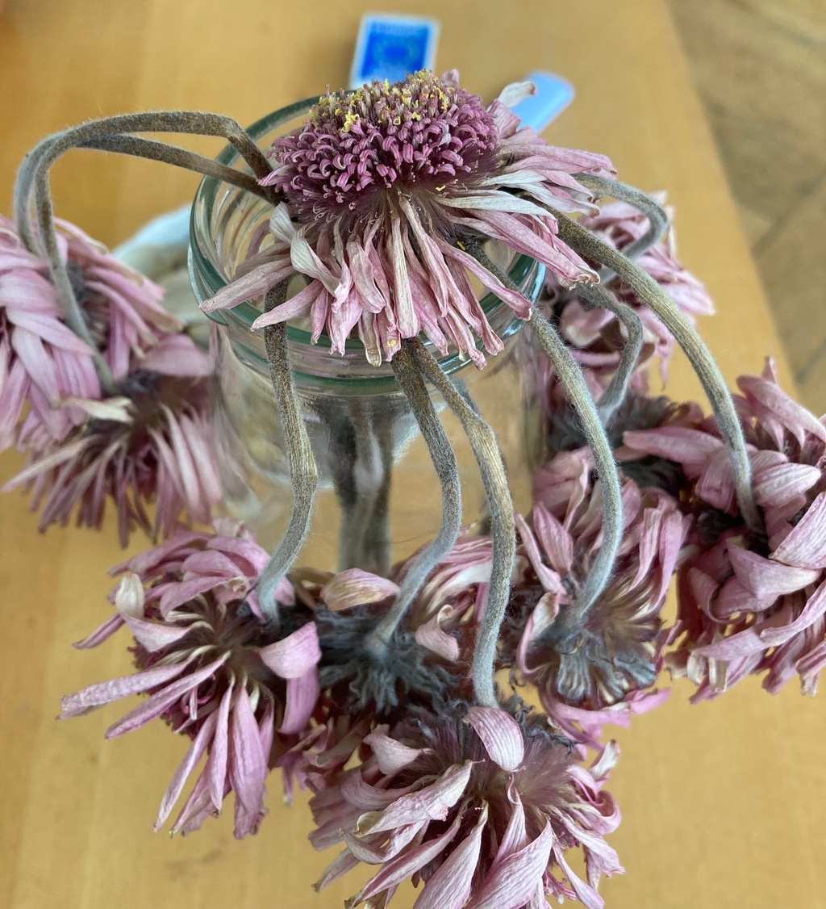

23.11 una o dos noches atrás soñe que comía pedazos de una polera blanca que tengo. los cortaba en cuadrados perfectos y mezclaba con un plato bizarro.22.11 soothing repetition 20.11 16.11 - there is no territory without a vector of exiting that territory. there is no deterritorialization without at the same time an effort of reterritorialization elsewhere. https://youtu.be/SlNYVnCUvVg 14.11: hoy me dí cuenta de lo extraña que es la palabra "carnal" en mexicano lol - refrains as manifestations of the virtual 12.11: anoche soñé que mi cabeza estaba inmersa entre ratas (y otros roedores?). estaba oscuro y no podía moverme. sentía como se movian alrededor, caminando por encima de mi cara y revolviendo mi cabello. conjuré todas las fuerzas que tenía para gritar o moverme, y después de lo que pareció una espera infinita me desperté sediento y con el grito en los labios.10.11: subjectification as a tool for continuous resingularization